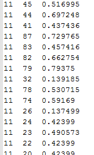
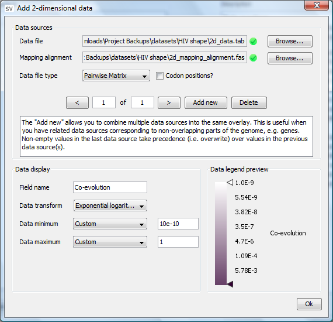

When using the dataset creation wizard on your own custom dataset it is necessary to get your data into a format that StructureVis can recognize.
In order to do this for two-dimensional data overlays, StructureVis requires a pairwise tab-delimitted matrix and a corresponding mapping alignment.

The matrix must consist of 3 columns where the first two columns represent the x, y co-ordinates and the third column represents a numeric value. Empty values are reprsented by omitting a particular set of x, y co-ordinates. The numbering of the x, y positions corresponds to columns of the alignment, where 1 corresponds to the first nucleotide column.